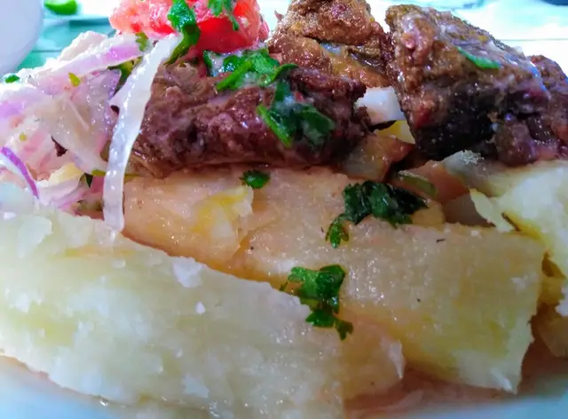

<section>
    <div class="container-imagen">
        
    </div>
    <nav class="letra">
    <h2>Ingredientes</h2>
    <ul>
        <li>Yucas sancochadas</li>
        <li> 1 cebolla cortada en juliana</li>
        <li> Tomate picado</li>
        <li>Ají limo</li>
        <li>2 limones</li>
        <li>Culantro picado</li>
        <li>Sal un poquito de vino tinto</li>
        <li>Cerdo adobado que quedó de año nuevo😊</li>
        
    </ul></nav> 
</section>
<footer class="container-footer">
    
    <p>Universidad Politecnica Salesiana</p>
</footer>
